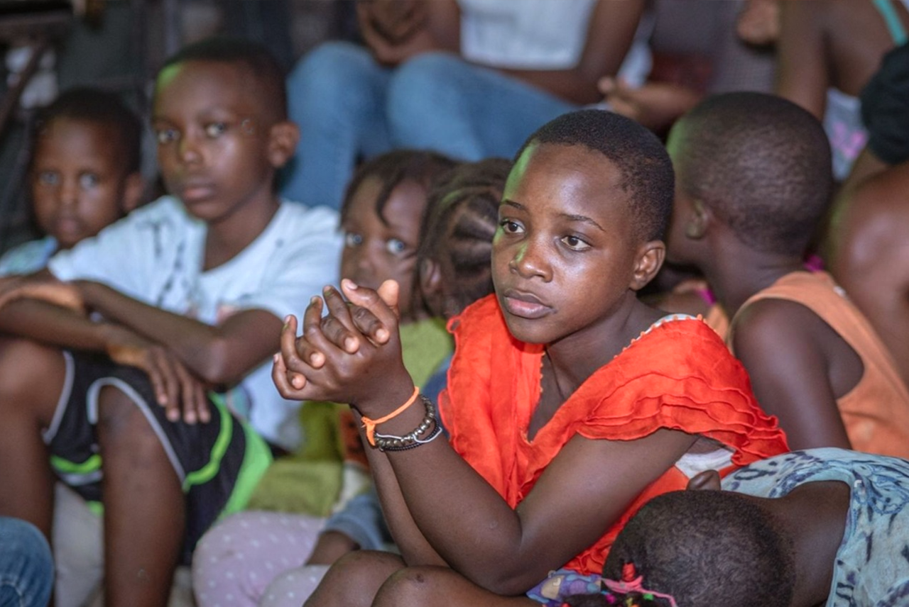

Services We Provide at Ismael’s Heart Foundation to Support Orphans
Basic Needs & Education
Orphanages prioritize providing children with essential care to meet their daily needs. This includes three nutritious meals a day, safe drinking water, clean clothing, and a secure place to live. By creating a stable environment where children feel safe and well-cared for, orphanages lay the foundation for children’s overall well-being and growth. With access to warm meals and comfortable living spaces, children can focus on their personal development and education without worrying about basic necessities.Education Orphanages emphasize the importance of education in shaping a brighter future for each child. They ensure that children have access to formal schooling, tutoring support, and educational materials, fostering a love for learning and helping each child reach their full potential. By supporting academic growth, orphanages empower children to overcome obstacles, build self-confidence, and dream of a better future. This commitment to education opens doors to opportunities, allowing children to aspire to various professions and positively impact their communities. 
Healthcare & Hygiene
Good health is essential for a child's development, so orphanages prioritize healthcare by providing regular medical check-ups, vaccinations, and dental care. Orphanages also offer mental health support, recognizing the emotional needs of children who may have experienced trauma. By addressing both physical and mental health, orphanages promote overall wellness, enabling children to grow up healthy and strong. Access to quality healthcare reduces the risk of illness and ensures children are equipped to participate fully in daily activities, schooling, and play.
Maintaining proper hygiene is vital to children’s health and self-esteem. Orphanages provide children with access to clean facilities, personal hygiene products, and education on basic hygiene practices, such as handwashing and dental care. By encouraging these habits early on, orphanages help children develop routines that contribute to lifelong wellness. Clean living environments and consistent hygiene practices not only protect children from illnesses but also foster a sense of dignity and confidence.